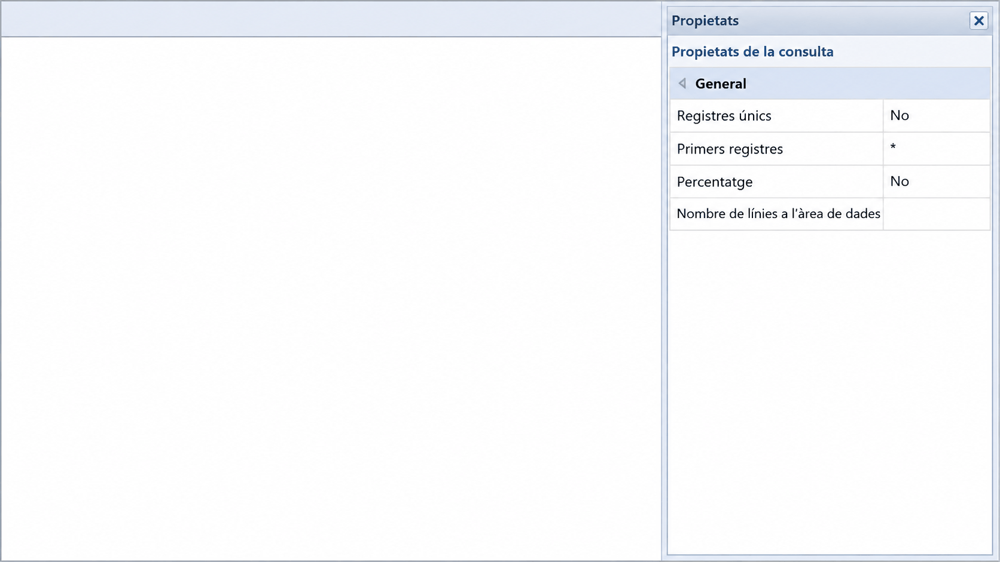
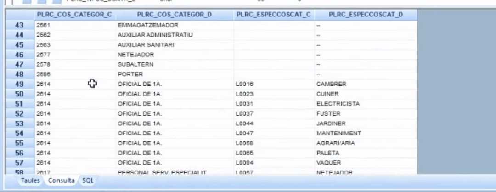
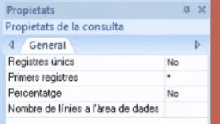

Apartat 1El problema dels valors repetits
Els registres únics són una propietat que permet veure només una vegada els valors que surten repetits dins d'una taula.
El problema apareix sempre que voleu un catàleg i no un llistat. Si demaneu la categoria de cada persona, obtindreu tantes files com persones; si el que voleu és saber quines categories existeixen, aquell resultat no us serveix de res.
Sense registres únics
Amb registres únics
Apartat 2L'exemple: categories i especialitats
És el cas del material oficial i val la pena reproduir-lo, perquè el resultat intermedi ensenya tant com el final.
-
Consulta nova sobre la taula de persones
Origen de dades
MODEL_TOT, i doble clic sobre WAIV9010_PERSONA. -
Seleccioneu els quatre camps
La categoria i l'especialitat viuen en un grup de quatre camps, amb la parella de codi i descripció que ja coneixeu:
PLRC_COS_CATEGOR_C -- codi de categoria PLRC_COS_CATEGOR_D -- descripcio de categoria PLRC_ESPECCOSCAT_C -- codi d'especialitat PLRC_ESPECCOSCAT_D -- descripcio d'especialitat -
Executeu i mireu el comptador
Surten tantes files com persones. La categoria d'administratiu apareix desenes de vegades, perquè hi ha desenes de persones que la tenen.
El nombre de registres de la cantonada inferior dreta coincideix amb el nombre de persones de la taula, perquè no hi heu aplicat cap filtre ni cap agrupació.
L'exemple del vídeo comença com qualsevol altre: origen de dades
MODEL_TOT, doble clic a la taula de persones i, dels
camps, els quatre de categoria i especialitat. En executar-lo, el
comptador dona el mateix nombre que persones té la taula, perquè no
s'hi ha aplicat cap filtre ni cap agrupació.
Apartat 3Activar la propietat

En tornar a executar, el nombre de registres baixa dràsticament i cada combinació de categoria i especialitat apareix una sola vegada.
El panell de la dreta canvia de contingut segons què tingueu seleccionat, i això despista. Fixeu-vos sempre en el títol:
- Propietats del camp seleccionat: format, decimals, capçalera. Unitat 4.
- Propietats de la taula: àlies de l'origen, nom de la taula.
- Propietats de la consulta: és aquest, i és l'únic que porta Registres únics.
En prémer el botó de la maneta, el panell surt a la banda dreta de la pantalla, no en cap finestra. En canviar Registres únics de No a Sí i tornar a executar, el nombre de registres disminueix molt: els valors ja no surten repetits, sinó que cada combinació apareix una sola vegada. El programa els ha agrupat sense que li ho demanessiu.

Apartat 4Les altres tres propietats
Ja que sou al panell, val la pena saber què hi ha. Són quatre propietats i la segona és molt útil i gairebé desconeguda.
| Propietat | Per defecte | Per a què serveix |
|---|---|---|
| Registres únics | No |
Elimina els duplicats. És el contingut d'aquesta unitat. |
| Primers registres | * |
Limita el resultat als primers N registres. L'asterisc vol dir tots. |
| Percentatge | No |
Fa que el límit anterior s'interpreti com un percentatge en comptes d'un nombre de files. |
| Nombre de línies a l'àrea de dades | buit | Quantes línies mostra la graella de resultats. És visual, no afecta les dades. |
Quan munteu una consulta pesada sobre una taula gran, poseu
Primers registres a 50 mentre
l'ajusteu. Comprovareu que les columnes i els criteris són els que voleu
sense esperar tot el volum, i quan estigui bé, torneu a posar-hi
l'asterisc.
Recordeu treure'l abans de donar cap xifra per bona: amb el límit posat, el comptador de registres no és el total real.

Apartat 5No és el mateix que agrupar
Ve just després de la unitat 10 i convé no barrejar-les, perquè totes dues redueixen el nombre de files.
Registres únics
Elimina les files repetides. Us diu quins valors hi ha. No compta res.
Equival a un SELECT DISTINCT.
Agregats
Agrupa i calcula. Us diu quants n'hi ha de cadascun, o la mitjana, o el màxim.
Equival a un GROUP BY.
La pregunta que us diu quina necessiteu és senzilla: voleu un catàleg o voleu un recompte? Si la resposta ha de ser una llista de valors, registres únics. Si ha de ser un número, agregats.
Apartat 6Per a què serveix de veritat
Més enllà de netejar un llistat, aquesta propietat té tres usos que apareixen per tot el curs.
-
Descobrir la codificació d'un camp
És l'ús més valuós. Davant d'un camp que només conté codis i no té descripció, com
TIPR_TIPUS_PRESSUPde la unitat 9, una consulta de registres únics sobre aquell camp us dóna la llista de valors que hi ha realment.Amb un matís que ja coneixeuUs diu quins codis hi ha a les vostres dades, no quins existeixen. Si al vostre àmbit no hi ha cap lloc amb el codi
V, no en veureu cap. La llista completa és sempre al PDF de la taula. -
Comprovar la qualitat de les dades
Si en un camp que hauria de tenir cinc valors possibles n'apareixen vuit, teniu dades brutes. Es veu d'un cop d'ull.
-
Alimentar un paràmetre
A la unitat 16 crearem consultes que pregunten a l'usuari amb un desplegable. Aquell desplegable s'alimenta d'una consulta auxiliar de registres únics, exactament com la d'aquesta unitat. És el requisit previ de tota la unitat 16.
Apartat 7Errors freqüents
El que passa
Activo registres únics i no canvia res.
Segueixen sortint valors repetits.
No trobo la propietat al panell.
El total no quadra amb el que vaig comptar ahir.
El que passa de veritat
No heu tornat a executar.
Teniu seleccionat algun camp identificador, com el NIF: si cada fila porta un valor únic, no hi ha res per unificar.
El panell mostra les propietats del camp o de la taula. Feu clic on no hi hagi cap camp seleccionat i torneu a obrir-lo.
Teniu Primers registres amb un límit posat d'una prova anterior.
Apartat 8Exercicis
El catàleg de categories
ReprodueixSobre PERSONA, seleccioneu els quatre camps de categoria i especialitat, executeu i anoteu el nombre de registres. Activeu Registres únics, torneu a executar i anoteu-lo altra vegada.
Comprovació
La primera xifra ha de coincidir amb el nombre total de persones de la taula, perquè no hi ha cap filtre. La segona ha de ser molt més petita: són les combinacions diferents de categoria i especialitat que hi ha al vostre àmbit.
Si la segona xifra és igual que la primera, reviseu que no tingueu seleccionat cap camp identificador.
Afegeix el NIF i mira què passa
Trenca
Amb Registres únics encara actiu, afegiu el camp
PERS_NIF a la consulta i torneu a executar.
- Quantes files surten ara?
- Per què la propietat ha deixat de fer efecte?
Què hauria d'haver passat
Tornen totes les files, tantes com persones. La propietat no ha deixat de funcionar: continua eliminant files repetides, però en afegir el NIF ja no n'hi ha cap de repetida, perquè el NIF és diferent per a cada persona.
És la mateixa lliçó que la regla dels camps de detall de la unitat 10, vista des d'un altre angle: un camp identificador destrueix qualsevol resum, sigui una agrupació o una eliminació de duplicats.
Descobreix un camp desconegut
Resol
Us passen un encàrrec sobre LLOC que
menciona el camp TIPR_TIPUS_PRESSUP. No teniu el manual a mà
i el camp no té descripció.
Esbrineu quins valors conté al vostre àmbit i quants llocs hi ha de cadascun, sense sortir de Click & Decide.
Solució
Quins valors hi ha, amb registres únics:
Quants n'hi ha de cadascun, amb un agregat de la unitat 10:
Les dues consultes es complementen: la primera us diu què hi ha i la segona quant n'hi ha. Amb la segona ja no cal la propietat de registres únics, perquè l'agrupació l'implica.
Apartat 9Llista de comprovació
- Explicar què fa la propietat de registres únics.
- Localitzar el botó Propietats de la consulta a la barra d'eines.
- Distingir els tres panells de propietats pel seu títol.
- Activar la propietat i comprovar el canvi al comptador de registres.
- Enumerar les altres tres propietats de la consulta.
- Fer servir Primers registres per provar una consulta pesada, i recordar treure'l.
- Explicar la diferència entre registres únics i agregats.
- Descobrir la codificació d'un camp que no té descripció.
- Saber que això mostra els codis presents, no tots els possibles.
- Explicar per què un camp identificador anul·la l'efecte de la propietat.
Fins ara totes les taules tenien una fila per persona o per lloc. La unitat 12 comença el bloc de les taules on això deixa de ser cert i on un mateix NIF ocupa diverses files.